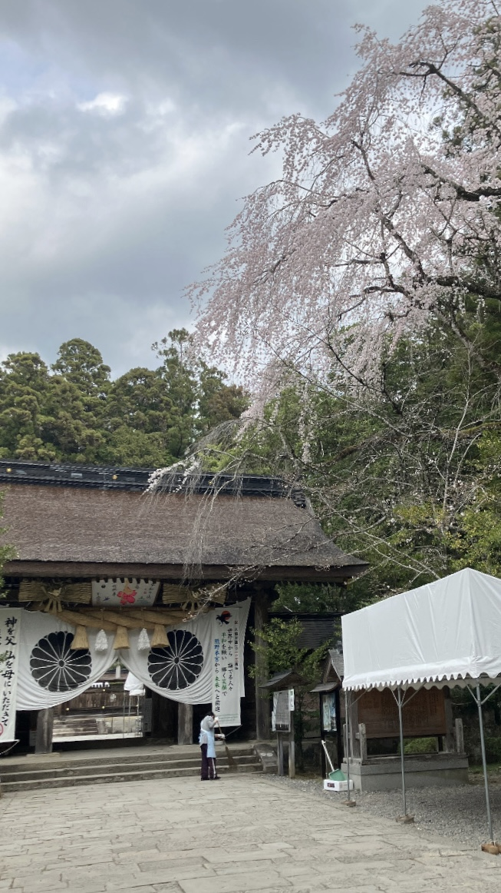
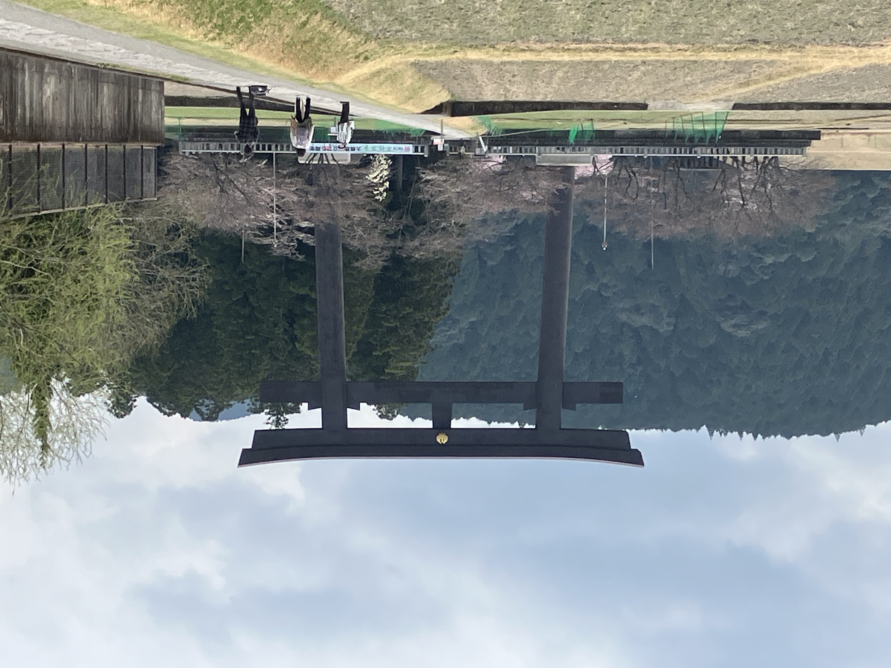
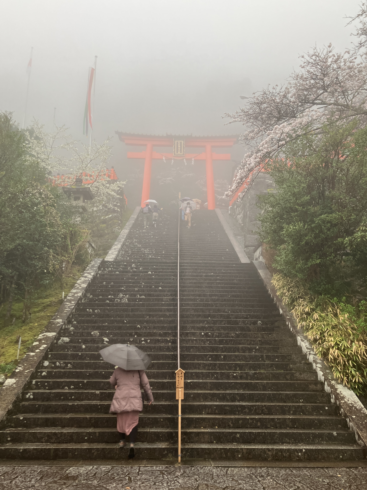
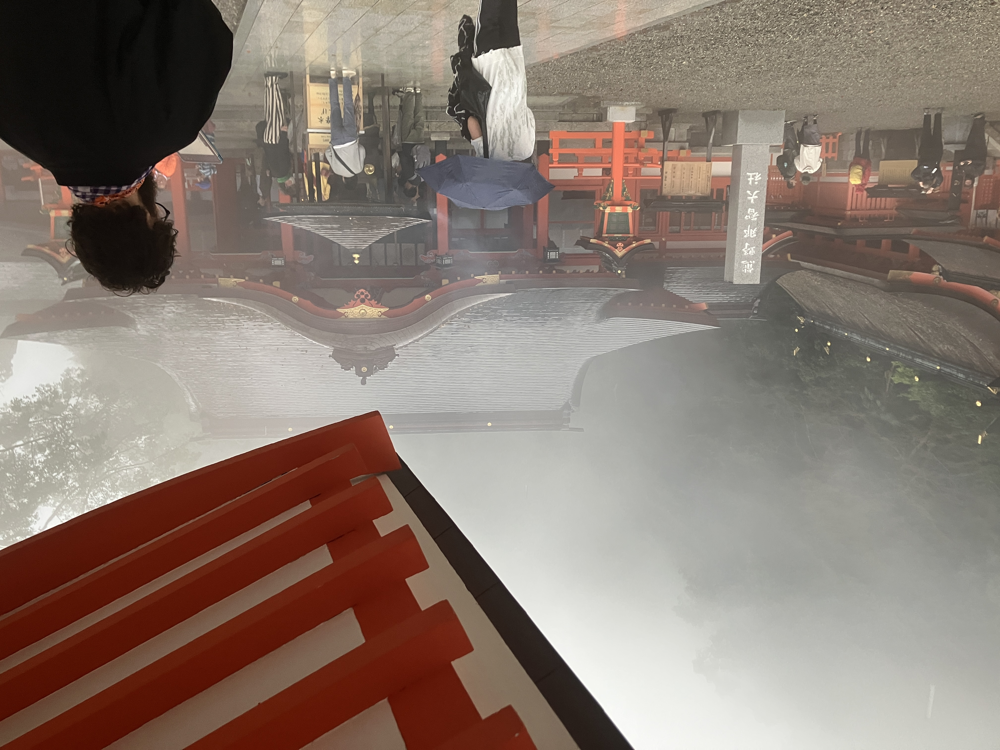

和歌山県 Vlog
和歌山県の3つの神社巡り
神社巡りで運気UP!?
和歌山県の神社巡りに行ってきました！
今回巡った３ヶ所の世界遺産にもなっている神社を紹介します！
熊野本宮大社
熊野本宮大社は大水害のため大斎原から移転しました。
最初に紹介するのは熊野本宮大社です！
本宮から徒歩10分程度で着く熊野本宮大社の旧社地に立つ鳥居の高さは約34mと日本一大きいことで有名です！
私も実際行ってみたらとても大きかったです！！


熊野速玉大社
次に紹介するのは熊野速玉大社です！
赤い造りが特徴でとてもかっこよくて迫力がありました！

熊野那智大社
最後に紹介するのは熊野那智大社！
みなさんも那智の滝で有名なので知っているのではないでしょうか？
私が参拝した日は雨が降っていたため霧がかかっていて、とても神秘的で素敵でした！
那智の滝にも行きましたが、こちらも迫力満点でした！！

